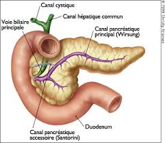

Les lithiases biliaires
Definition
La lithiase biliaire est caracterisee par la formation de calculs dans les voies biliaires.
Les calculs sont des concretions pierreuses formees par des matieres qui sont normalement en solution dans l'organisme.

Physiopathologie
Les voies biliaires sont constituees par les canaux hepatiques droits et gauches qui se regroupent dans le canal hepatique commun formant le canal choledoque.
La vesicule biliaire sert a stocker la bile et l'evacue au moment des repas.
La bile secretee par le foie sert a transformer les graisses (cholesterol) en tres petites particules. Le cholesterol est normalement a l'etat soluble pendant le transport, il a besoin d'eau. C'est l'absence d'eau qui est responsable de la formation des calculs.
| Video de la vesicule biliaire |
| e Docteur Richard Martzolff Encyclopedie medicale Vulgaris |
Examens effectues
Bilan biologique :
NFS : verifier l'etat infectieux.
CRP : augmente lors d'un terrain infectieux ou inflammatoire (norme : < 30).
Bilan hepatique :
GOT.
CTP.
Phosphate alcaline.
Gamma-GT.
Amylase-Lipase : voir si retentissement hepatique.
Bilirubine totale et conjuguee.
TP-TCK, plaquette.
Echographie du foie et voies biliaires.
Scanner abdominale : verifier si le pancreas est sain et signes de pancreatite biliaire et verifier si la paroi vesiculaire epaissie.
Cholangiographie intraveineuse : injection d'un produit opaque.
Cholangio-Pancreatographie-Retrogarde-Endoscopique (CPRE) : examen qui permet d'opacifier les voies biliaires et qui peut permettre l'ablation d'un calcul.
Sphincterotomie : on ouvre au niveau du sphincter d'Oddi (orifice oe le canal choledoque s'ouvre dans le duodenum) pour retirer le calcul.
Traitements et soins infirmiers
Cholecystectomie simple sous cœlioscopie
Preparations pre-operatoire
La veille : bain antiseptique complet, ongle propre, cheveux propres, ombilic propre.
Le matin : douche antiseptique avec le meme produit que la veille, ombilic propre.
Champ operatoire : haut du pubis a raser.
Enlever toutes les protheses : dentaires, lunettes, lentilles, auditives.
Verifier le dossier et les bilans.
Retour de la salle de surveillance post-interventionnelle
Pansement.
Redon a droite qui se situe dans la loge de la vesicule biliaire.
Perfusion.
Traitement anticoagulant, antalgique.
Surveillances post-operatoire
Surveillance de la conscience, vigilance.
Surveillance de la couleur des teguments.
Surveillance du pouls, tension arterielle, diurese.
Surveillance du drain de redon : contenu, quantite, aspect, absence de bile.
Surveillance du pansement.
Surveillance d'une apparition de douleurs a l'epaule.
Surveillance du risque thrombo-embolique.
Si pas de probleme : ablation de la perfusion.
Alimentation a J1 : bouillon, the, tisane. A J2 : soupe, yaourt, compote.
Retrait des fils ou agrafes a J9-J10.
Refaire le pansement tous les 3 jours.
Cholecystectomie par larparoscopie
Preparations pre-operatoire
La veille : bain antiseptique complet, ongle propre, cheveux propres, ombilic propre.
Le matin : douche antiseptique avec le meme produit que la veille, ombilic propre.
Champ operatoire : haut du pubis a raser.
Enlever toutes les protheses : dentaires, lunettes, lentilles, auditives.
Verifier le dossier et les bilans.
Retour de la salle de surveillance post-interventionnelle
Voie d'abord veineuse : apport hydrique important : rea-hydrique.
Sonde nasogastrique.
Redon dans la loge vesiculaire, parfois, un drain sous-hepatique.
Sonde urinaire.
Traitement anticoagulant, antalgique, antibiotique.
Surveillances post-operatoire
Surveillance du pansement : risque hemorragique.
Surveillance du redon : surtout pas de bile.
Surveillance du transit : sonde gastrique enleve lors de la presence de gaz.
Surveillance de la pompe a morphine contrelee (PCA), etre vigilant quand le patient dort.
Surveillance de la frequence respiratoire : si tres basse, antidote de la morphine : Naloxone.
Complications
Saignement.
Ileus paralytique : intestin endormit, il se coince et le patient peut se mettre en occlusion.
Peritonite biliaire.
Abces sous phrenique.
Soins infirmiers aux patients porteurs d'un drain de Kehr
Le drain de Kehr est un drain en caoutchouc en forme de T qui est place dans le choledoque qui evacue la bile vers l'exterieur lors d'une intervention chirurgicale sur la voie biliaire principale.
Indications
Eviter l'ictere (jaunisse) par retention de bile.
Faciliter la cicatrisation en evacuant la bile et eviter l'apparition d'œdemes.
Soins infirmiers en post-operatoire
Surveillance post-operatoire : voie d'abord veineuse, drain de Kehr, sonde gastrique en aspiration.
Traitement anticoagulant, antalgique, antibiotique.
Surveillance du drain :
En declivite.
Permeabilite.
Le drain ne soit pas etre coude sinon risque d'engorgement.
Surveillance de l'ecoulement, en moyenne 250 a 500 ml/j.
Si sueur, surveillance de la temperature et en tenir compte pour les pertes hydriques.
Noter aspect, odeur de la bile.
Surveillance du ionogramme car dans la bile il y a du bicarbonate qui sert a alcaliner le bol alimentaire. Il y a ici, une perte importante de bile donc de bicarbonate.
Soins de confort : bien installer, soulager douleur (position antalgique), soins de bouche.
Lever precoce.
Bonne antisepsie de la region pour le pansement que l'on refait tous les 3 jours.
Si le patient arrive jaune, surveiller la concentration des urines (urines foncees = mal hydrate) et peuvent contenir des pigments biliaires.
Surveillance des selles : si selles blanches cela veut dire que la bile ne passe pas encore bien dans le circuit, c'est a dire qu'il doit y avoir un obstacle, un œdeme.
Entre J4-J7, drain clamper : surveillance fievre, frisson, douleur, couleur des teguments.
Radiographie de contrele vers J7.
Pas de douche, ni de bain si presence de drain.
Ablation du drain vers J21.
Complication
Dues au clampage : fievre, douleur, ictere.
Hemorragie post-operatoire qui peut etre exteriorisee ou non. Surveillance hemodynamique.
Cholerragie (ecoulement de bile) : la bile s'ecoule dans le drain de Kehr normalement. Mais si elle s'ecoule dans le drain sous-hepatique, ce n'est pas normal.
Peritonite biliaire.
Surveillance de la paroi car risque d'abces.
Voir aussi :
L'appareil digestif
Module Gastro-enterologie